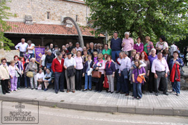

-
Este año hemos celebrado Jornadas Culturales, comenzamos el día 30 de Abril reuniéndonos en San Pantaleón de Aras (Cantabria), para celebrar el "II Encuentro de Pueblos con el nombre de San Pantaleón", una jornada inolvidable, donde nos recibieron con todo el calor y el cariño del mundo, ya somos una gran familia, que cuenta los días que faltan para volvernos a ver, la próxima vez será en San Pantaleón del Páramo (Burgos).
- 
{kind=link}
El día 24 de Julio organizamos la Visita Nocturna de la Ermita, esta vez acudió mayor número de gente que el año pasado, cambiamos el espectáculo y resultó todo un éxito, sin olvidar que nuestras posibilidades son limitadas, pero la ilusión y el cariño con el que lo preparamos, unidos al encanto y la magia de San Pantaleón hacen que el público asistente disfrute y se divierta, quedándole ganas de repetir, pues no olvidemos que San Pantaleón engancha.
Montamos una Exposición Fotográfica dedicada a las familias del pueblo, compuesta por 120 fotografías pertenecientes a 14 familias que han vivido y viven en San Pantaleón, a través de estas imágenes hemos podido comprobar los cambios habidos desde principios del siglo XX hasta nuestros días, a la vez de rendir nuestro pequeño homenaje a estas familias.